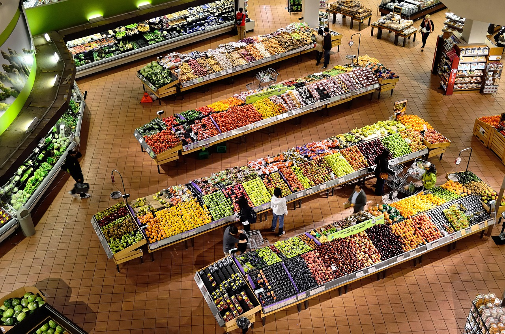

주제 다이소와 올리브영의 매대 전략 차이 (evergreen / brand)
제목 후보
메타 설명 다이소와 올리브영의 매대 전략은 왜 이렇게 다를까. 발견형과 설득형 진열의 구조적 차이를 현장 경험으로 분석한다.
라벨 다이소, 올리브영, 매대전략, 다이소올리브영비교, 리테일마케팅, 매대진열, 오프라인리테일심리, 다이소매대구성, 올리브영MD전략, 다이소올리브영차이점
실용 자산 계산·기준 표 — 두 매장의 매대 전략을 항목별로 대비시키면 검색 독자가 핵심 차이를 한눈에 비교하고 끝까지 읽게 된다
발행 전 팩트체크
이미지 (Blogger 편집기에 드래그해 넣으세요)

지난 주말 아울렛에 갔다가 다이소에 들러 건전지를 사고, 바로 옆 올리브영에 들어가 딸 써니 선크림을 샀다. 두 매장을 연달아 걸으면서 묘한 기분이 들었다. 분명 둘 다 '매대'인데, 걷는 방식이 완전히 달랐다. 다이소에서는 눈이 바빴고, 올리브영에서는 손이 바빴다.
결론부터 말한다. 다이소는 발견을 설계하고, 올리브영은 설득을 설계한다. 둘 다 매대 하나하나에 치밀한 계산이 깔려 있지만, 그 계산이 노리는 지점이 다르다. 다이소는 고객이 "어, 이런 것도 있네"라고 느끼게 만들고, 올리브영은 고객이 "이게 나한테 맞겠다"라고 느끼게 만든다.
다이소 매장에 들어서면 통로가 좁다. 일부러 좁게 만든 것이다. 카트를 끌기 어려운 폭에, 양쪽 선반은 바닥부터 천장 가까이까지 빽빽하다. 가격표는 크고 단순하다. 1,000원, 2,000원, 5,000원. 고민할 여지를 주지 않는다.
신기한 건 진열 순서다. 생활용품 옆에 뜬금없이 캠핑용품이 있고, 그 옆에 다이어리 코너가 있다. 동선이 논리적이지 않다. 그런데 이게 의도된 비논리다. 목적 구매로 들어온 고객이 계산대까지 가는 길에 "어, 이것도 필요했지"를 세 번, 네 번 겪게 만드는 구조다. 다이소 매대는 쇼핑 리스트를 따라가는 길이 아니라, 보물찾기를 하는 길이다.
실제로 그날 건전지를 사러 들어갔다가 계산대까지 가는 길에 미니 빗자루와 수세미를 집어들었다. 장바구니를 보니 처음 계획에 없던 물건이 세 개였다. 계획적으로 들어갔다가 즉흥적으로 나오는 경험, 다이소에서는 이게 거의 공식처럼 반복된다.
균일가 정책도 이 구조를 받쳐준다. 가격이 낮고 단순하니 "이거 살까 말까"의 고민 시간이 거의 없다. 집어서 바구니에 넣는 데 걸리는 시간이 0.5초다. 좁은 통로, 빽빽한 선반, 단순한 가격표. 이 세 가지가 합쳐져서 다이소는 '천천히 걸으며 발견하는 매장'이 된다.
몇 해 전 화장품 브랜드 신제품 입점 미팅에서 올리브영 MD와 마주 앉은 적이 있다. 그때 들은 말이 아직도 기억에 남는다. "저희는 매대 하나를 매체라고 생각합니다." 매대가 광고 지면이라는 뜻이었다.
올리브영에 들어가면 통로가 넓다. 테스터가 놓여 있고, 거울이 붙어 있다. 입구 가까운 자리에는 랭킹 매대가 있다. '지금 많이 팔리는 제품' '세일 특가' 같은 카피가 붙는다. 이 랭킹 매대는 실시간 판매 데이터를 반영해 구성되는 것으로 알려져 있다. 매대 자체가 추천 알고리즘인 셈이다.
그날 선크림 매대 앞에서도 똑같은 경험을 했다. SPF 지수별로 나뉜 선반에 '자외선 차단 랭킹 1위'라는 카피가 붙어 있었고, 처음 생각했던 제품 대신 결국 그 옆 1위 제품을 집었다. 테스터로 발라보고, 옆에 붙은 리뷰 숫자를 한 번 더 확인하고 나서야 바구니에 넣었다. 다이소에서 0.5초 걸렸던 선택이, 여기서는 족히 3분은 걸린 셈이다.
자체 브랜드, 이른바 PB 상품은 눈높이 선반에 놓인다. 눈높이 선반은 전 세계 어느 리테일에서든 가장 비싼 자리다. 다이소가 가격으로 고민을 없앤다면, 올리브영은 정보와 체험으로 고민을 해결해준다. "이 제품이 왜 나한테 맞는지"를 테스터로, 리뷰 수치로, 랭킹 숫자로 설득한다. 그래서 올리브영 매대는 천천히 걸으며 발견하는 길이 아니라, 멈춰 서서 비교하고 결정하는 길이다.
써니를 데리고 간 날은 매대를 다른 눈으로 보게 된다. 다이소 장난감 코너는 아이의 허리 높이쯤 되는 선반에 저가 장난감과 스티커, 미니 피규어가 빼곡하다. 써니는 그 높이에서 눈을 반짝이며 혼자 고른다. 부모가 개입할 틈이 거의 없다. 가격이 낮으니 "이거 살래?"에 "응"이 바로 나온다.
올리브영에는 아예 어린이 코너가 따로 없다. 대신 청소년을 겨냥한 틴트와 립밤 코너가 성인 매대와 조금 떨어진 자리에 있다. 써니 또래 친구들이 그 코너 앞에서 테스터를 발라보며 한참 서 있는 걸 본 적이 있다. 다이소가 '아이가 혼자 결정하는 매대'를 만들었다면, 올리브영은 '또래와 비교하며 머무는 매대'를 만든 셈이다. 같은 타깃이라도 매대가 요구하는 행동이 다르다는 걸 아이들 뒤에서 지켜보며 새삼 느꼈다.
다이소 계산대 앞에는 늘 작은 바구니가 쌓여 있다. 300원짜리 머리끈, 500원짜리 메모지, 1,000원짜리 핫팩. 지갑을 꺼내는 그 순간에 "어차피 계산할 거 하나 더" 심리를 공략하는 자리다. 줄을 서서 기다리는 시간이 길어질수록 바구니 속 물건은 하나둘 늘어난다. 줄이 길다고 불평하다가도 손은 계속 뭔가를 집는다.
올리브영 계산대 앞은 분위기가 다르다. 미니 사이즈 향수, 핸드크림, 마스크팩 세트가 투명 아크릴 진열대에 가지런히 놓인다. 가격은 1만 원 안팎이지만 "선물하기 좋은 사이즈"라는 문구가 붙어 있다. 다이소의 계산대 매대가 충동을 공략한다면, 올리브영의 계산대 매대는 마지막으로 한 번 더 '이유'를 던진다. 선물, 여행, 기념일 같은 핑계를 붙여준다.
매대만큼이나 눈에 잘 안 띄지만 분명히 작동하는 게 조명과 음악이다. 다이소는 매장 전체가 균일한 백색 형광등이다. 어느 코너를 가도 밝기가 똑같다. 음악도 거의 들리지 않는다. 고요한 조도는 "빨리 둘러보고 빨리 고르라"는 신호처럼 느껴진다.
올리브영은 코너마다 조명 색온도가 다르다. 메이크업 코너는 따뜻한 핑크빛 조명이 얼굴을 환하게 비추고, 스킨케어 코너는 차분한 화이트 톤이다. 배경음악도 경쾌한 팝이 낮은 볼륨으로 깔린다. 이런 감각적 디테일은 수치로 증명하기는 어렵지만, 체류 시간에 영향을 준다는 건 매장에 들어가 본 사람이라면 몸으로 안다. 다이소가 '머물지 않아도 되는 매장'이라면, 올리브영은 '머물고 싶게 만드는 매장'이다.
| 항목 | 다이소 | 올리브영 |
|---|---|---|
| 진열 목적 | 우연한 발견 유도 | 선택에 대한 설득 |
| 통로 설계 | 좁고 빽빽하게 | 넓고 여유 있게 |
| 가격 표기 | 단순한 균일가 표기 | 할인율, 리뷰 수, 랭킹 숫자 병기 |
| 체험 요소 | 거의 없음 | 테스터, 거울, 샘플 적극 배치 |
| 핵심 상품 위치 | 카테고리 전 구간에 분산 | 눈높이 선반에 PB·추천 상품 집중 |
| 구매 결정 시간 | 짧게(즉흥 구매) | 길게(비교 구매) |
다이소는 계절이 바뀔 때마다 매대 구성을 빠르게 바꾸는 것으로 알려져 있다. 명절이 다가오면 포장지와 선물 상자가 입구 쪽으로 옮겨오고, 장마철이 되면 우산과 제습제가 눈에 띄는 자리를 차지한다. 상품 회전이 빠르다는 건 그만큼 매대 교체 작업도 잦다는 뜻이다. 매장 직원들이 거의 상시로 진열을 손보는 이유다.
올리브영은 매대 교체를 데이터로 움직인다. 랭킹 매대는 실시간 판매량에 따라 순위가 바뀌는 구조라, 매대를 물리적으로 뜯어고치지 않아도 상품의 노출 순서가 달라진다. 대신 PB 상품이나 신규 입점 브랜드가 눈높이 선반을 차지하는 건 MD 협상과 시즌 전략에 따라 정해진다. 그 미팅 자리에 앉아보면, 몇 센티미터 차이의 선반 위치를 두고도 진지하게 숫자를 들이미는 사람들을 보게 된다. 매대 하나가 수백만 원짜리 협상 테이블이 되는 순간이다.
매대 전략이 다른 이유는 두 회사가 파는 것의 본질이 다르기 때문이다. 다이소는 '필요'를 판다. 필요는 가격이 낮을수록, 고민이 짧을수록 잘 팔린다. 올리브영은 '효과'를 판다. 효과는 가격이 아니라 신뢰가 좌우한다. 그래서 다이소는 고민을 없애는 쪽으로, 올리브영은 신뢰를 쌓는 쪽으로 매대를 설계했다.
두 회사의 성장 곡선도 이 전략을 증명한다. 다이소는 전국 매장 수를 꾸준히 늘려온 것으로 알려져 있고, 균일가 정책을 흔들지 않는다. 올리브영은 오프라인 매장을 늘리는 동시에 온라인몰 매출 비중을 키워왔다. 발견형 매장은 매장 수로 승부하고, 설득형 매장은 데이터로 승부한다. 매대는 결국 그 회사가 고객을 어떻게 설득하기로 했는지를 보여주는 증거다.
회의실에서 "우리 매대는 전환율이 낮다"는 보고를 받을 때마다 떠오르는 장면이 있다. 매대 레이아웃을 바꾸자는 의견이 나오면, 실제로는 레이아웃이 아니라 그 매장이 무엇을 팔고 있다고 믿는지부터 다시 물어야 한다는 것. 다이소와 올리브영의 매대 차이를 들여다보면, 좋은 진열이란 상품을 보기 좋게 놓는 기술이 아니라 고객의 의사결정 시간을 설계하는 일이라는 게 보인다.
씁쓸하면서도 꽤 인상적이다. 우리는 그저 쇼핑을 하러 들어갔다고 생각하지만, 통로의 폭과 선반의 높이와 가격표의 글씨 크기 하나하나가 이미 우리의 동선을 읽고 설계된 결과였다는 것. 그리고 우리는 그 설계대로 꽤 성실하게 움직였다.
Q. 다이소에서는 계획에 없던 물건을 더 많이 사게 되나요, 아니면 올리브영에서 꼼꼼히 비교하다 더 많이 사게 되나요?